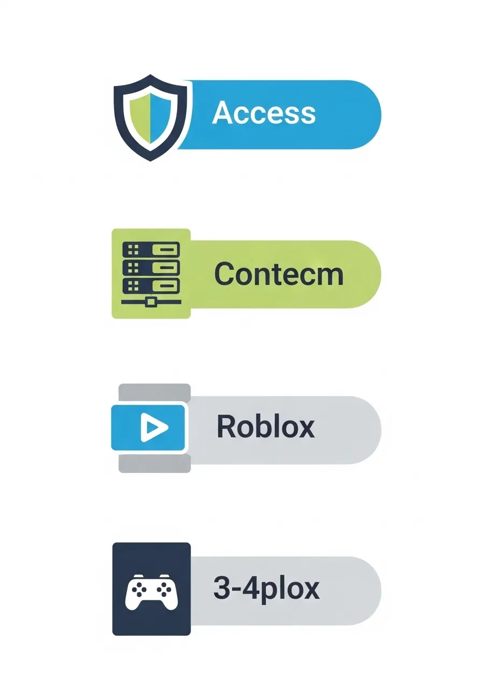
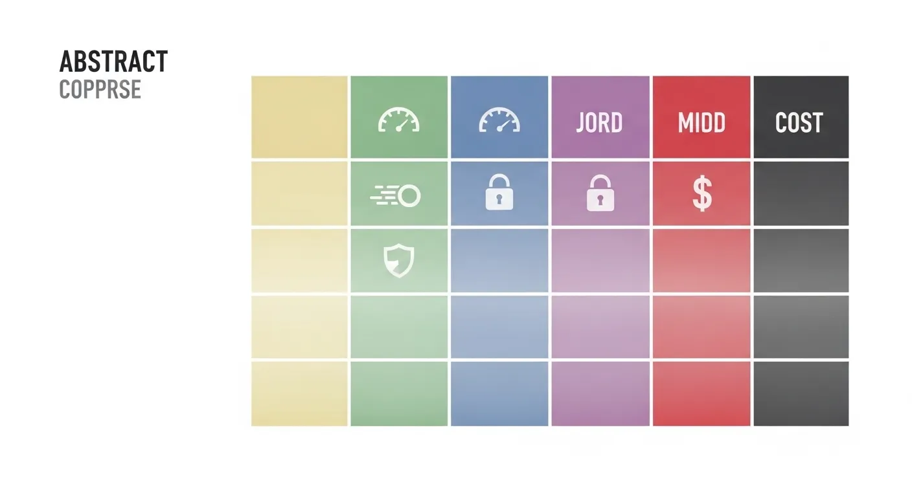

Как играть в Роблокс в России в 2026 году: Полное руководство по доступу
Роблокс остается одной из самых популярных игровых платформ в мире, объединяя миллионы пользователей, которые создают и исследуют виртуальные миры. Но что делать, если вы находитесь в России и сталкиваетесь с трудностями при доступе? В 2026 году многие пользователи задаются вопросом: как играть в Роблокс в России? Это руководство поможет вам разобраться в ситуации и получить беспрепятственный доступ к любимым играм, обеспечивая стабильное и безопасное соединение.

Почему могут возникать трудности с доступом к Roblox?
В 2026 году доступ к некоторым международным онлайн-сервисам и играм может быть затруднен в различных регионах по ряду причин. Это могут быть как технические проблемы на стороне провайдера, так и региональные ограничения, связанные с лицензированием контента или государственными регуляциями. Хотя Роблокс стремится быть доступным по всему миру, локальные особенности могут создавать барьеры для российских пользователей. Важно понимать, что эти трудности не всегда означают полную блокировку, но могут требовать использования дополнительных инструментов для стабильной работы.
Основные способы получения доступа к Roblox в России
Если вы хотите продолжить наслаждаться Роблокс в России в 2026 году, существует несколько проверенных подходов. Выбор метода зависит от ваших технических навыков, требований к скорости и готовности инвестировать в платные решения.
1. Использование VPN-сервисов: Это один из самых популярных и эффективных способов. VPN (виртуальная частная сеть) помогает повысить конфиденциальность, маскируя ваш реальный IP-адрес и перенаправляя трафик через сервер в другой стране. Это позволяет обмануть систему определения местоположения и получить доступ к Роблокс, как будто вы находитесь за пределами России. 2. Прокси-серверы: Похожи на VPN, но обычно обеспечивают меньшую безопасность и скорость. Прокси могут быть полезны для простых задач, но для игр с высокими требованиями к задержке (пинг) они подходят меньше. 3. Браузеры со встроенным VPN/Прокси: Некоторые веб-браузеры предлагают встроенные функции, которые могут помочь обойти ограничения. Однако их функциональность часто ограничена, и они могут быть нестабильны для игровых сессий. 4. Специализированное ПО: Существуют программы, разработанные для обхода гео-ограничений, которые могут предложить более стабильное соединение, чем обычные прокси.
Для надежного и комфортного игрового опыта в Роблокс, особенно в 2026 году, рекомендуется рассмотреть использование проверенного VPN-сервиса. Он не только поможет получить доступ, но и поддержит современные протоколы для защиты ваших данных.
Текст ссылки на сервис для доступа к RobloxМетоды обхода ограничений: Сравнение
| Критерий | Прямой доступ (если возможен) | VPN-сервис | Прокси-сервер | Встроенный VPN в браузере |
|---|---|---|---|---|
| Доступность | Зависит от региона | Высокая (много серверов) | Средняя (часто бесплатные перегружены) | Средняя (ограниченный выбор локаций) |
| Скорость | Максимальная | Может снижаться (зависит от сервера) | Низкая (часто нестабильная) | Низкая |
| Безопасность | Базовая | Помогает повысить конфиденциальность | Низкая | Низкая |
| Стабильность | Высокая | Высокая (для платных сервисов) | Низкая | Низкая |
| Стоимость | Бесплатно | Есть бесплатные/платные версии | Часто бесплатно | Бесплатно |
| Для игр | Отлично | Хорошо (при выборе быстрого сервера) | Плохо (высокий пинг) | Плохо (высокий пинг) |

Кому подойдет этот сервис (рекомендуемый инструмент)
Рекомендуемый сервис идеально подойдет тем, кто:
- Столкнулся с проблемами доступа к Роблокс в России в 2026 году.
- Ищет стабильное и относительно быстрое решение для онлайн-игр.
- Хочет повысить конфиденциальность своего интернет-соединения.
- Ценит простоту использования и надежность.
- Нуждается в доступе к другим гео-ограниченным ресурсам.
Этот инструмент разработан для обеспечения бесперебойного доступа к любимым онлайн-развлечениям, помогая преодолевать региональные барьеры и поддерживая безопасность данных.
Плюсы и минусы использования дополнительных инструментов
Как и любое технологическое решение, использование дополнительных инструментов для доступа к Роблокс имеет свои преимущества и недостатки.
Плюсы:
- Доступ к контенту: Главное преимущество – возможность играть в Роблокс и пользоваться другими сервисами, которые могут быть недоступны напрямую.
- Повышение конфиденциальности: Многие инструменты, особенно VPN, помогают повысить конфиденциальность вашей онлайн-активности, скрывая ваш IP-адрес от посторонних глаз.
- Безопасность: Использование надежных сервисов может снизить риск перехвата данных, особенно при подключении к общественным Wi-Fi сетям.
- Обход цензуры: Позволяет получить доступ к информации и контенту, который может быть ограничен в вашем регионе.
Минусы:
- Возможное снижение скорости: Скорость интернет-соединения может зависеть от выбранного сервера и его загруженности. Это особенно критично для онлайн-игр.
- Стоимость: Качественные и надежные сервисы часто являются платными. Бесплатные варианты могут иметь ограничения по скорости, трафику или количеству серверов.
- Сложность настройки: Некоторым пользователям может потребоваться время для освоения настройки и использования таких инструментов.
- Потенциальные риски: Использование непроверенных или бесплатных сервисов может нести риски для безопасности ваших данных и устройства. Всегда выбирайте проверенные решения.
На что обратить внимание перед установкой и использованием
Прежде чем начать использовать любой инструмент для обхода ограничений, учтите следующие моменты:
- Выбор надежного сервиса: Отдавайте предпочтение известным и хорошо зарекомендовавшим себя решениям. Изучите отзывы и рейтинги.
- Политика конфиденциальности: Ознакомьтесь с политикой конфиденциальности выбранного сервиса. Убедитесь, что он не ведет логи вашей активности.
- Скорость и стабильность: Для игр крайне важна низкая задержка (пинг) и высокая скорость соединения. Тестируйте сервис перед покупкой, если есть такая возможность.
- Совместимость: Убедитесь, что выбранный инструмент совместим с вашей операционной системой и устройствами (ПК, смартфон, планшет).
- Техническая поддержка: Хорошая поддержка поможет решить любые возникающие вопросы.
- Обновления: Регулярные обновления гарантируют актуальность и безопасность сервиса.
Часто задаваемые вопросы о Roblox в России
Работает ли Роблокс в России в 2026 году?
Да, Роблокс в целом доступен, но некоторые пользователи могут сталкиваться с региональными ограничениями или нестабильностью соединения. Использование дополнительных инструментов может помочь обеспечить бесперебойный доступ.
Нужен ли VPN для игры в Роблокс в России?
Не всегда, но VPN значительно упрощает доступ и обеспечивает более стабильное соединение, особенно если вы испытываете трудности с прямой загрузкой или подключением.
Какие риски связаны с использованием бесплатных сервисов для доступа к Роблокс?
Бесплатные сервисы часто имеют ограничения по скорости, могут быть нестабильными, и некоторые из них могут не обеспечивать достаточный уровень конфиденциальности, а иногда даже собирать данные пользователей. Рекомендуется использовать проверенные решения.
Можно ли использовать Роблокс на мобильных устройствах в России?
Да, Роблокс доступен на мобильных устройствах. Если возникнут проблемы с доступом, существуют мобильные приложения для обхода ограничений, которые могут быть установлены на ваш смартфон или планшет.
Что делать, если Роблокс все равно не запускается?
Проверьте ваше интернет-соединение, убедитесь, что ваш дополнительный инструмент (если используется) активен и правильно настроен, а также попробуйте перезагрузить устройство. Если проблема сохраняется, обратитесь в службу поддержки выбранного сервиса или Роблокс.
Заключение: Наслаждайтесь Roblox без преград
В 2026 году игра в Роблокс в России остается вполне реальной, даже если вы сталкиваетесь с определенными трудностями. Выбрав подходящий инструмент и следуя нашим рекомендациям, вы сможете наслаждаться всеми возможностями этой уникальной платформы. Не дайте ограничениям встать на пути к вашим любимым виртуальным мирам! Начните свое приключение в Роблокс уже сегодня.
Получить доступ к RobloxРаскрытие информации: Некоторые ссылки на этой странице могут быть партнерскими. Это означает, что мы можем получить комиссию, если вы перейдете по ссылке и выполните целевое действие. Для вас это ничего не меняет и помогает нам поддерживать проект.